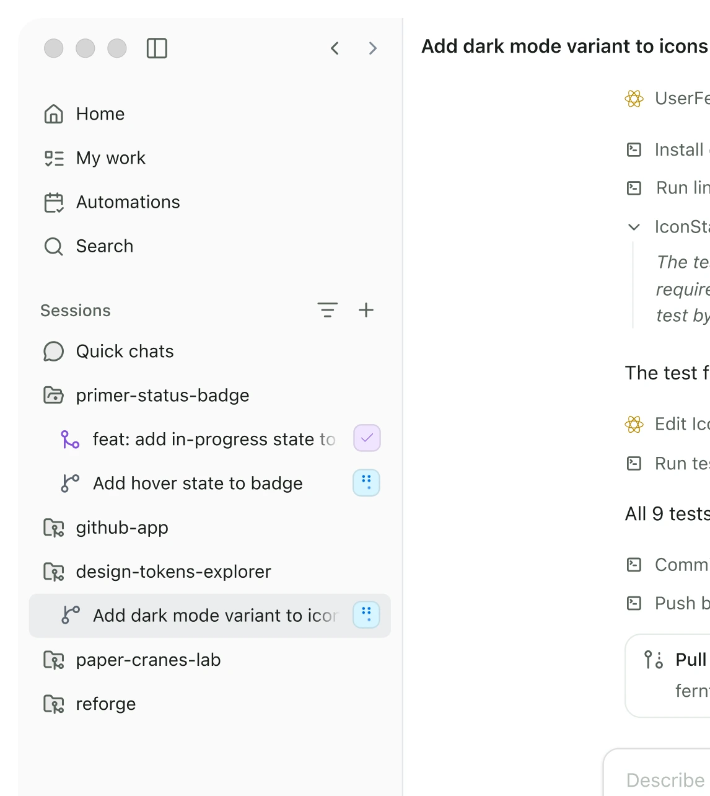
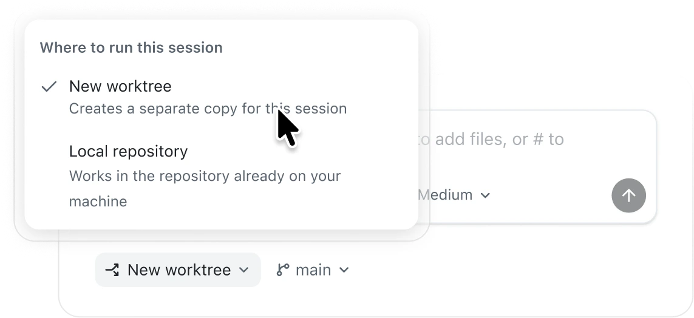
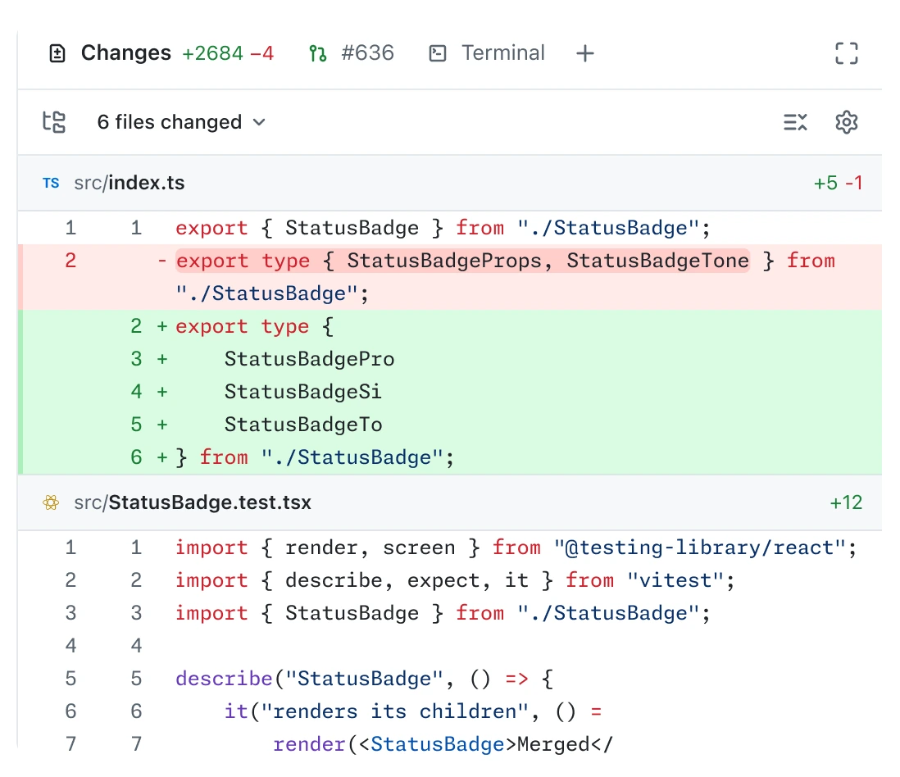
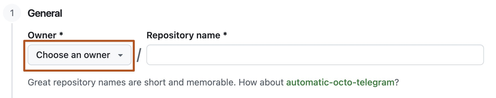
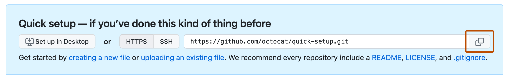

From idea to your first GitHub project
A beginner learning path with the GitHub Copilot app
- Audience
- People with little or no software-development experience.
- Time
- About 90–120 minutes, after account and software setup.
- Your project
- A small idea of your own, such as a simple app, tool, or script.
- Your finish line
- A working, documented, reviewed project in your GitHub organization.
You do not need to memorize programming syntax. You bring the idea. Your job is to explain the goal, make decisions, check the result, and decide what gets shared. Copilot helps you write the code; you remain responsible for the outcome.
The workflow:
- Describe
- Plan
- Document
- Build
- Test
- Review
- Push
This guide is for the standalone GitHub Copilot desktop app. It is not a guide to Microsoft 365 Copilot, GitHub Desktop, or the Copilot extension in Visual Studio Code.
Before you begin
- Have the GitHub Copilot app installed and signed in with your personal GitHub account, the one your organization invited. If you have not accepted the invitation yet, look for the invitation email from GitHub and accept it first. Your organization also needs to enable Copilot access for you.
- Have Git installed. Your project may need other tools, such as a programming language. Copilot checks what is already installed; use those tools or ones your facilitator has approved. Ask the facilitator for setup help; do not install unfamiliar tools just because an agent suggests them.
- Bring an idea for something small you would like to build. It does not need to be complete; you will shape it in step 2.
- Know your organization name, the required repository visibility, and whether its rules allow the first push to a new repository’s
mainbranch. - Use made-up or non-sensitive example data only. Do not paste passwords, API keys, customer information, or confidential documents into the exercise.
Five words you will use
| Word | Plain-language meaning |
|---|---|
| Project / repository | Your project is a folder of files. A Git repository also records their change history. A copy on GitHub lets others collaborate. |
| Session | One conversation and working context with Copilot for a task. |
| Commit | A named snapshot of selected changes, initially saved locally. |
| Push | Uploading local commits to a repository on GitHub. Saving a file or making a commit does not push it. |
| Branch / pull request | A branch keeps a line of work separate. A pull request, or PR, asks people to review and merge that work. |
Step 1: Meet the app and start a project
Allow 10 minutes
Learn these controls; ignore advanced customization and automation for now.

| Area | What you need it for today |
|---|---|
| Projects in the sidebar | Connect your project folder and return to its session. |
| Prompt box | Tell Copilot what you want. Read its questions and answers here. |
| Mode dropdown below the prompt | Choose Plan before building, then Interactive for controlled implementation. |
| Changes above the prompt | Inspect which files and lines changed. |
| Browser / terminal canvas | See your project running, or the commands Copilot runs. You can ask Copilot to open these for you. |
| My work | Find GitHub issues and pull requests later. |
Start with an empty local folder
- In your computer’s file manager, create a folder named
YOUR-PROJECT-YOUR-USERNAME. ReplaceYOUR-PROJECTwith a short name for your idea, in lowercase with hyphens, such asmy-first-project, andYOUR-USERNAMEwith your GitHub username. On Windows, a suitable location isC:\Users\YOUR-NAME\Projects\YOUR-PROJECT-YOUR-USERNAME. Do not select your whole home folder, Downloads folder, or a folder containing unrelated work. - In the app sidebar, click + next to Projects.
- Under Add project from, choose Local folder or repository, then select your new folder.
- Under Projects, find the connected folder and click + next to it to start a session.
- Stay in that project and session throughout this first exercise. For a plain folder, work in that folder. If a repository location picker appears, choose Local repository for this one-person lab, not a cloud session or a separate worktree.
- Leave the model on Auto, or the model your facilitator recommends. Select Plan in the mode dropdown. Do not send a request to build yet.

Why start locally? You can experiment before sharing anything. Connecting a local folder does not create a repository in the organization or upload your files. We will do that after review.
Step 2: Shape your idea and write the whole brief
Allow 20 minutes
Plan mode is a conversation about the work, not a magic “make it correct” button.
| Mode | How to use it in this learning path |
|---|---|
| Plan | Clarify requirements and propose an approach. Review before approving implementation. |
| Interactive | Build in small, agreed steps and respond to questions and permission requests. |
| Autopilot | More autonomous execution. Skip it for this first exercise. |
Interactive mode is not a promise to ask before every line of code. Keep normal permission prompts and organization controls enabled. Do not enable blanket tool auto-approval.
Choose a small idea
Pick something you would actually use. Your first project should do one main job for one kind of person, and be small enough to describe in a sentence.
| Aspect | Good for a first project | Leave for later |
|---|---|---|
| Users | You, or one kind of person like you. | Several kinds of users with different permissions. |
| Size | One main task with three or four small features. | A long feature list or a whole platform. |
| Tools | Runs on your own computer with tools you have or are approved to use. | Paid services, new accounts, or other people’s systems. |
| Data | Made-up or non-sensitive examples. | Real customer, personal, or confidential data. |
| Checking | You can try it and see whether it works. | Behavior that is hard to check, such as AI features inside the project. |
If you have several ideas, choose the smallest. You can ask Copilot to help you narrow one down, but the idea and the decisions stay yours.
Prepare your brief
Write your first prompt in a note before sending it. Use this checklist to remove avoidable ambiguity:
| Consider | Write down | Tip |
|---|---|---|
| Problem and outcome | What problem are we solving? | One or two sentences, in your own words. |
| User | Who will use it? | One kind of person is enough for a first version. |
| Main journey | What will the user actually do? | Write it as steps: start, action, result, next action. |
| First-version scope | What must work? What is excluded? | Three or four small features; name what you are leaving out. |
| Data | What information does it use or save, where, and how sensitive is it? | Use made-up examples; nothing personal or confidential. |
| Constraints | Devices, technology, budget, installation limits? | Prefer tools already on your computer; no paid services. |
| Success | What could another person check? | Something observable, such as “my entries are still there when I come back.” |
| Unknowns | What should Copilot ask rather than assume? | Empty or unusual input, edge cases, and what happens when something fails. |
Avoid “Build a nice app that works.” Prefer observable outcomes. “Nice,” “simple,” and “user-friendly” are useful intentions, but they are not testable requirements on their own.
Copy-ready first prompt
Copy the prompt below into your note. Replace every part in [square brackets] with your own idea, using your answers from the checklist. Keep the other sections as they are: they set the boundaries and make Copilot ask you instead of guessing.
You are my software-development coach. I am a beginner.
Help me plan a small project in plain language.
MODE AND BOUNDARIES
We are planning, not implementing.
You may inspect the selected project and check relevant installed tools.
Do not write project code, install packages, create cloud resources,
commit, push, or publish anything. Do not inspect unrelated folders.
MY IDEA
I want to build [a short description of your project]
for [who will use it].
It solves this problem: [the problem, in one or two sentences].
Success means [what someone could see or check when it works].
MAIN USER JOURNEY
[First step] -> [next step] -> [result] -> [what happens next]
FIRST-VERSION SCOPE
1. [The most important thing it must do, with any rules or limits.]
2. [The second thing it must do.]
3. [The third thing it must do.]
4. [Optional: a fourth small thing. Delete this line if not needed.]
OUT OF SCOPE
No accounts, sharing, notifications, AI features inside the project,
external APIs, databases, paid services, or internet deployment.
Also out of scope: [anything else you are deliberately leaving out].
DATA AND TECHNICAL CONSTRAINTS
The project works with [what information it uses or saves].
Use made-up or non-sensitive examples only; no personal or
confidential information.
Recommend the simplest technology that fits my idea, preferring tools
that are already installed or approved by my organization. Explain
your recommendation in plain language and ask me before choosing.
Confirm the relevant tools are available before relying on them.
Prefer built-in capabilities over extra packages.
Explain any additional tool or dependency and ask before adding it.
Propose one simple way to run the project and one way to run its
automated tests. Anything that runs a local server must listen only
on this machine.
If the project saves information, explain where it is stored and what
that does and does not protect or preserve.
QUALITY AND SUCCESS
Handle invalid or unexpected input with a clear message.
Treat anything a user enters as data, never as code to run.
If the project has a screen, it must work with a keyboard alone.
If it is a web page, it must also work on a phone-sized screen.
Test normal use, invalid input, and empty or unusual cases.
If something the project depends on fails, such as saving, it must
say so honestly.
Keep the code and documentation understandable to a beginner.
ASK ME; DO NOT SILENTLY DECIDE
Before finalizing the plan, ask about missing or ambiguous requirements.
Ask one focused question at a time and WAIT for my answer.
Give 2-3 clear options, a recommendation, and a short explanation.
In particular, ask about edge cases in my scope, such as empty,
duplicate, or very long input, and what should happen when
something fails.
Do not silently choose consequential behavior, change scope, add
services, or invent my preferences. Record unresolved items as open
questions, not as approved assumptions.
If I do not know, explain the trade-off and help me choose.
PLAN OUTPUT
After we resolve the important questions, show the proposed plan as
Markdown in this conversation. Include:
- Goal, intended user, and success conditions.
- In scope and out of scope.
- User stories with IDs such as US-01, written as:
"As a ..., I want ..., so that ...".
- Testable acceptance criteria for each story using Given/When/Then.
- Agreed decisions, reasons, assumptions, and remaining open questions.
- Simple technical approach and proposed file structure.
- Small implementation steps, one user story at a time.
- Automated and manual checks tied to the acceptance criteria.
- Risks, limitations, and a definition of done.
Do not implement or mark the plan approved.
Ask me to review it and wait for explicit approval.
Start with your first clarification question.Now use Plan mode
- Confirm the correct project and Plan in the mode dropdown.
- Check that no [square brackets] are left in your prompt, then paste it and send it.
- Answer the questions. Ask for a simpler explanation if an option is unfamiliar.
- Read the proposed plan. Check that it matches your idea, stays small, and contains no unexplained technology or invented decisions.
- Ask for revisions before approving. A useful response is: “Keep accounts out of scope. Replace ‘easy to use’ with a check I can do myself. Ask me about the open question instead of deciding for me.”
If Copilot starts guessing, say:
Pause. That decision was not agreed.
Explain the options in plain language, ask me to choose, and wait.
Update the plan after my answer. Do not implement yet.Step 3: Turn the agreed plan into project documentation
Allow 10–15 minutes
A chat is a working conversation. The repository should hold the durable agreement.
Why user stories and documentation matter
A user story describes value to a person, rather than just a technical task. It follows a simple pattern: “As a [kind of user], I want [capability], so that [benefit].” For example:
As a user, I want my entries to still be there when I come back, so that I can continue where I stopped.
An acceptance criterion makes that story checkable:
Given I have saved an entry, when I close the project and open it again, then the entry is still there.
“Save it in a file” is an implementation choice, not the user benefit. “Make saving reliable” is too vague to tell whether the story is finished.
Clear documentation helps another person understand the project, helps you resume next week, gives Copilot reusable context, and prevents reviews from turning into arguments about what was meant. Update the documentation when an agreed requirement changes; do not quietly change the goal to match unfinished code.
| File in your project | Purpose |
|---|---|
README.md | What the project does, how to run and test it, and its limitations. |
docs\PLAN.md | The agreed goal, scope, user stories, acceptance criteria, decisions, and implementation sequence. |
docs\TEST-RESULTS.md | What was actually checked, the results, and what remains untested. |
docs\REVIEW.md | Review findings and what was fixed or deliberately deferred. |
Here, docs\PLAN.md means a file named PLAN.md inside the docs folder. These examples use Windows-style paths; on macOS or Linux, ask Copilot to use the equivalent paths for your operating system.
Markdown is plain text with lightweight formatting: # creates a heading, - creates a bullet, and - [ ] creates a checkbox. GitHub renders .md files into readable pages.
Save the plan before building
First ask for the final Markdown in the conversation. Then switch to Interactive and send the documentation-only request below.
Do not approve a full implementation just to save the plan. If the app is waiting on a plan-approval card, ask Copilot to make documentation-only the next step before approving it. An app-internal plan or a chat message is not a substitute for the file in your project.
I approve creating the documentation only, not project code.
Save our agreed plan as docs\PLAN.md in this project.
Include the user stories, acceptance criteria, decisions and reasons,
test strategy, and definition of done. Preserve any unresolved questions.
Do not label unresolved decisions as approved.
Create a short README.md with the project's purpose, scope, and a link
to the plan. If the project cannot run yet, say that explicitly;
do not invent working setup or test commands.
Show me the actual file paths and open the Markdown for me to read.
Stop after these documentation changes.
Do not install, implement, commit, or push anything.Use the reusable plan template to check the structure. To see how specific a good plan can be, look at the example plan. It describes someone else’s idea, a small Learning Tracker, so compare its level of detail, not its content. Your plan describes your own idea, and its decisions are yours.
Read the saved files. Correct them if necessary. In a future session, explicitly ask Copilot to read README.md and docs\PLAN.md, or attach them with @; do not assume every project document is automatically included.
Step 4: Implement one small, approved step at a time
Allow 25–30 minutes
Stay in Interactive mode.
Read README.md and docs\PLAN.md.
Check for unresolved decisions that block implementation; ask me first
if you find any.
I approve the agreed minimal project setup and US-01 only.
Implement that story and its acceptance criteria, with focused tests.
Use the approved tools and do not introduce new dependencies without
explaining why and getting my approval.
Explain the files you change in beginner-friendly language.
Show me how to run the project and try it myself: give me the exact
steps, and explain how to stop it. If it runs a local server, give me
its exact local address and keep it accessible only on this machine.
Run the applicable checks and report the actual commands and results.
Tell me explicitly if something could not be checked.
Update README.md with the verified run and test instructions.
Create or update docs\TEST-RESULTS.md with the checks and outcomes.
Do not mark a story complete just because code was generated.
Stop for my feedback before starting the next story.
Do not commit, push, deploy, or add extra features.Run or open the project yourself. Try what US-01 promises, then try something it should reject or handle, such as empty input. Check that the behavior matches the plan.
If it does not, report the steps, expected result, and actual result. Replace the brackets with what you saw:
For US-01, I [what you did, step by step].
Expected: [what the plan says should happen].
Actual: [what happened instead].
Please fix this within the agreed scope and add a regression test.
Explain the change and rerun the relevant checks.Once satisfied, approve the next story by ID, such as US-02, and repeat until every story in your plan is done. A change of direction goes back into the plan before it becomes code.
Do the final acceptance checks yourself as well:
- Try the normal path of every story in your plan.
- Try invalid or unusual input, such as empty, very long, or unexpected values, and check that the project responds clearly.
- If the project saves anything, close it and open it again, and check that the saved information is still there. For a web page, refresh the same local address, including the port.
- Try starting with no data at all, and any other edge cases in your plan.
- If the project has a screen, complete the main journey using only the keyboard. If it is a web page, also check a narrow, phone-sized window.
Ask Copilot to help reproduce less familiar cases, such as a failed save. Record checks not performed as Not run, never as passing.
Step 5: Ask Copilot to review the code, then address the findings
Allow 15–20 minutes
Implementation is not the final quality check. Review is a separate pass to look for mistakes, missing requirements, and avoidable complexity.

+ lines are additions; red or - lines are removals. This is an example project, not yours. You do not need to understand every line immediately: ask Copilot to explain the purpose of each changed file. Open full size (opens in a new tab)Open Changes above the prompt box. If a plain folder does not yet provide a Git diff, ask Copilot to list and review the project files directly. Do not assume “no diff” means “nothing to review.”
Copy-ready review prompt
Perform a review-only pass of this project.
Do not change project files or fix findings yet.
Read README.md, docs\PLAN.md, and the current implementation and tests.
Review the whole small project, including new or untracked files,
not only an existing Git diff.
Check:
- Every user story and acceptance criterion, including edge cases.
- Input validation, safe handling of entered data, and error handling,
such as failed saves.
- If the project has a screen: keyboard use, labels, visible focus,
and small screens.
- Missing or misleading tests.
- Unnecessary complexity, dependencies, or features outside the plan.
- Accidentally included secrets, private data, or generated files.
- Whether the documentation matches the actual project.
Run the existing relevant, non-destructive checks where possible.
Report findings with an ID, priority, file and line when applicable,
what can go wrong, how to reproduce it, and the smallest suggested fix.
Do not print secret values if you find one.
Map each acceptance criterion to evidence or mark it unverified.
Separate confirmed problems from suggestions and uncertainty.
State exactly what you did not inspect or test.
Explain the results for a beginner and wait for my decision.The app also supports /review for an active session’s changes. The full prompt above is useful for a first project because it explicitly includes new files and checks the agreed plan, not just the diff.
Decide which findings to fix. For example, after replacing the IDs with the real ones:
Fix findings R1 and R2 only, staying within the approved plan.
Add or update focused tests, rerun the affected checks, and review
the fixes again. Report any remaining uncertainty.
Save the findings and their final status in docs\REVIEW.md.
Update docs\TEST-RESULTS.md with the actual results.
Record deferred findings and the reason; do not hide them.
Do not commit, push, or publish yet.If there are no findings, still record the review scope, checks, and limitations. AI review is useful feedback, not proof that the project is safe or correct. Have a peer or facilitator inspect the result if you are unsure what a finding means. Fix exposed credentials before publishing; removing a secret from the latest file is not sufficient if it is already in Git history.
Step 6: Publish the reviewed project to your organization
Allow 10–15 minutes
You are uploading source code and documentation, not deploying a public website.
Create the empty GitHub repository
- In your browser, sign in to GitHub with your personal account, the one invited to the organization.
- Open Create a new repository (opens in a new tab).
- In Owner, select YOUR-ORG, not your personal username. If the organization is missing, you may not have accepted its invitation yet: look for the invitation email from GitHub. If it is still missing, stop and ask the facilitator about your membership or permissions.
- Use a unique repository name, such as
YOUR-PROJECT-YOUR-USERNAME, and add a short description. - Choose Private, unless the facilitator has explicitly specified another organization-approved visibility. Do not choose Public merely to make sharing easier.
- Because you already have local files, leave Add a README, Add .gitignore, and Choose a license unselected. Do not select a template or ask a cloud agent to populate the repository.
- Recheck the owner, name, and visibility, then click Create repository.
- On the empty repository’s Quick Setup page, choose HTTPS and copy its URL.


https://github.com/YOUR-ORG/YOUR-PROJECT-YOUR-USERNAME.git. Open full size (opens in a new tab)Ask Copilot to prepare the upload, without uploading yet
Return to the same project session. Replace the example URL in this prompt with the URL you just copied:
Prepare to publish this project, but do not change files, initialize Git,
stage, commit, push, or change GitHub settings yet.
Destination:
https://github.com/YOUR-ORG/YOUR-PROJECT-YOUR-USERNAME.git
Expected visibility: Private.
Inspect the actual project root, local Git state, branch, existing
remotes, and the destination repository where access is available.
If you cannot verify the destination owner, visibility, or empty state,
tell me what I must verify in the browser; do not assume.
Check which project files should be included and propose a .gitignore
for secrets, local settings, dependency folders, and generated output.
Check for accidentally included credentials or private data, including
tracked files and any existing history. Report locations, not values.
Explain the limits of this check.
Show the exact files to include, excluded files, destination, branch,
and proposed Git steps in beginner-friendly language.
If this folder is not a Git repository, propose initializing only
this project folder, with main as the initial branch.
If there is existing history, a different remote, a non-empty
destination, or a branch-protection conflict, stop and explain.
Do not overwrite, force-push, replace remotes, or bypass policies.
Wait for my approval.Read the proposed file list. It should include your source, tests, README, and project documentation, but not passwords, .env secrets, installed dependency folders, or unrelated files. An ignore rule does not remove files already tracked by Git.
Approve the exact destination and push
The following prompt is for a new, empty repository whose rules permit the initial push to main. Only send it after reviewing the preparation above. Replace the URL and any details that do not match the agreed steps.
I have checked the file list and verified that this is the correct,
empty Private repository:
https://github.com/YOUR-ORG/YOUR-PROJECT-YOUR-USERNAME.git
I approve the proposed .gitignore and the listed files.
Initialize Git in this project folder only if needed.
If a commit identity is missing, ask me rather than inventing one
or changing global Git settings.
Create a commit named "Add first version with plan and review".
Connect this exact destination if no remote is configured, and push
the approved commit to main without force.
Stop if authentication, permissions, repository state, or branch
rules differ from our preparation. Do not change access, visibility,
security settings, or rules. Do not deploy anything.
Afterward, verify that GitHub has the same commit and expected files.
Show the repository URL, branch, and commit ID.
Tell me clearly if any operation failed or could not be verified.Complete authentication in GitHub’s trusted sign-in flow yourself. Never paste a token or password into a prompt. App sign-in and Git’s push authentication may need separate authorization.
If a rule blocks the push: Do not force-push or disable the rule. Ask the facilitator to provide an approved initialized repository and use a feature branch plus a pull request. A completely empty repository may need an authorized initial commit before the PR route is possible.
Confirm it really arrived
Open the repository in your browser and check:
- The owner is YOUR-ORG, the repository name is correct, and visibility matches the agreed setting.
- The expected branch and newest commit are present.
- Source files, tests,
README.md,docs\PLAN.md,docs\TEST-RESULTS.md, anddocs\REVIEW.mdare visible. - The README renders and its instructions and document links make sense.
- No unwanted files were included. Ask a facilitator to inspect unexpected files before sharing further.
For later changes, start a feature branch or isolated repository session and use Create PR when ready for review. Follow the organization’s required reviewers and checks; a push alone is not a review or merge.
Step 7: Show what you learned
Give a two-minute demonstration to a partner or facilitator:
- Explain the user problem and one thing deliberately left out of scope.
- Show a user story and demonstrate its acceptance criteria in your project.
- Show one question Copilot asked before a decision was made.
- Show the plan, a test result, and the code-review record.
- Open the organization’s repository and point out the uploaded commit.